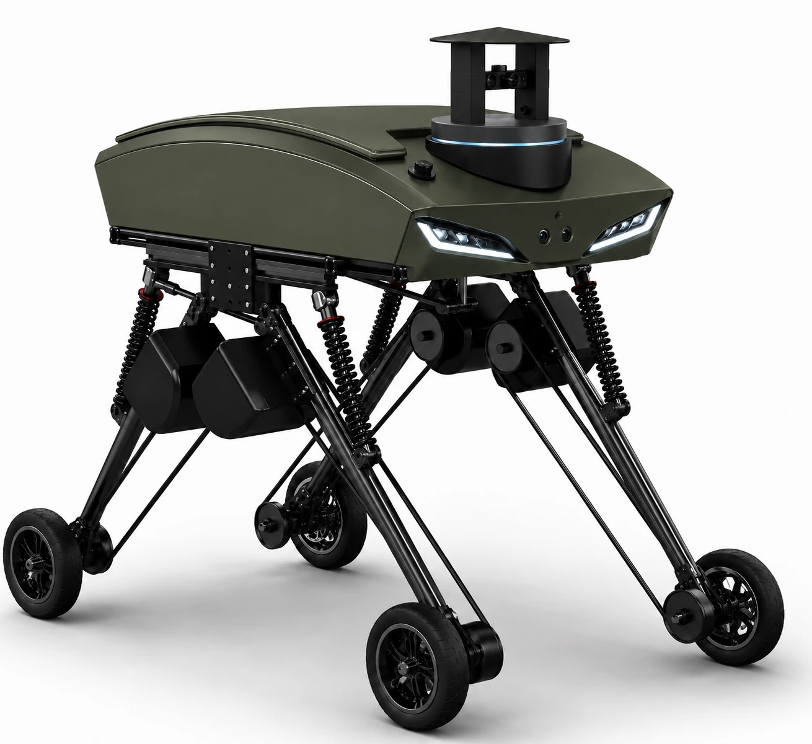
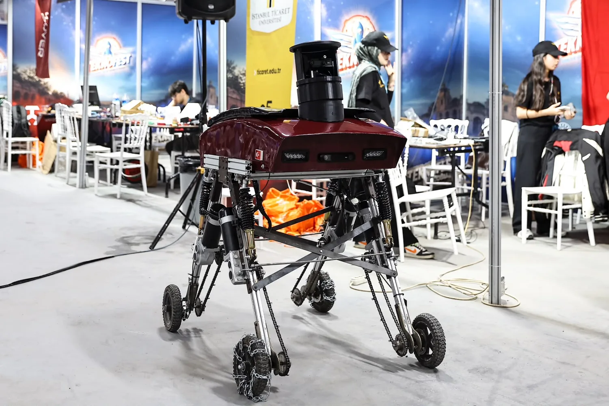

01 / ARAÇ
YEKTA İKA
Yarışma görevleri için geliştirdiğimiz insansız kara aracı. Uzaktan kontrol, görüntü işleme ve otonom sürüş çalışmalarını tek platformda birleştiriyoruz.


01 / ARAÇ
Yarışma görevleri için geliştirdiğimiz insansız kara aracı. Uzaktan kontrol, görüntü işleme ve otonom sürüş çalışmalarını tek platformda birleştiriyoruz.

